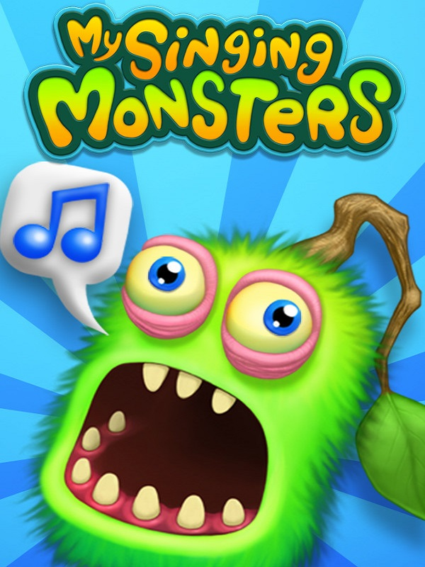

My Singing Monsters
My Singing Monsters
Detalhes
|  | |
| Tempo de jogo | 16h 48m 0s |
| Última Atividade | 15/11/2024 10:39:23 |
| Adicionado | 11/02/2025 12:35:29 |
| Modificado | 11/02/2025 12:38:24 |
| Status de Conclusão | Jogado |
| Biblioteca | Steam |
| Fonte | Steam |
| Plataforma | PC (Windows) |
| Data de Lançamento | 03/09/2012 |
| Pontuação da Comunidade | 79 |
| Avaliação da crítica | 77 |
| Pontuação do Usuário | |
| Gênero | Music Simulator Strategy |
| Desenvolvedor | Big Blue Bubble |
| Editor | Big Blue Bubble |
| Funções | Co-Operative Multiplayer Single Player |
| Links | Official iPhone Android YouTube Wikia Wikipedia Steam Twitch iPad |
| Tag | |
Descrição
Bem-vindo a My Singing Monsters! Crie-os, alimente-os, ouça-os cantar!
Crie um monstro fofo e alimente seu monstro musical para ajudá-lo a crescer. Cuide de uma coleção de personagens divertidos de monstros neste jogo musical gratuito para toda a família!
Crie uma ilha cheia de monstros cantantes, e veja a sua música evoluir enquanto você cria e atualiza os animais felizes. Projete e construa decorações exclusivas para fazer seu mundo parecer do jeito que você quer, então compartilhe sua criação com os amigos! Você vai adorar explorar a maravilhosa terra de fantasia do Mundo dos Monstros!
Baixe My Singing Monsters hoje — Divirta-se monstruosamente!
CARACTERÍSTICAS:
Crie um monstro fofo e alimente seu monstro musical para ajudá-lo a crescer. Cuide de uma coleção de personagens divertidos de monstros neste jogo musical gratuito para toda a família!
Crie uma ilha cheia de monstros cantantes, e veja a sua música evoluir enquanto você cria e atualiza os animais felizes. Projete e construa decorações exclusivas para fazer seu mundo parecer do jeito que você quer, então compartilhe sua criação com os amigos! Você vai adorar explorar a maravilhosa terra de fantasia do Mundo dos Monstros!
Baixe My Singing Monsters hoje — Divirta-se monstruosamente!
CARACTERÍSTICAS:
- Colecione e suba mais de 250 monstros fofos e engraçados - os dragões estão fora de moda…
- Personalize suas ilhas com decorações legais e música cativante
- Desfrute de gráficos impressionantes e animação de personagens
- Jogue com amigos de todo o mundo
- Descubra novas atualizações e eventos durante o ano todo